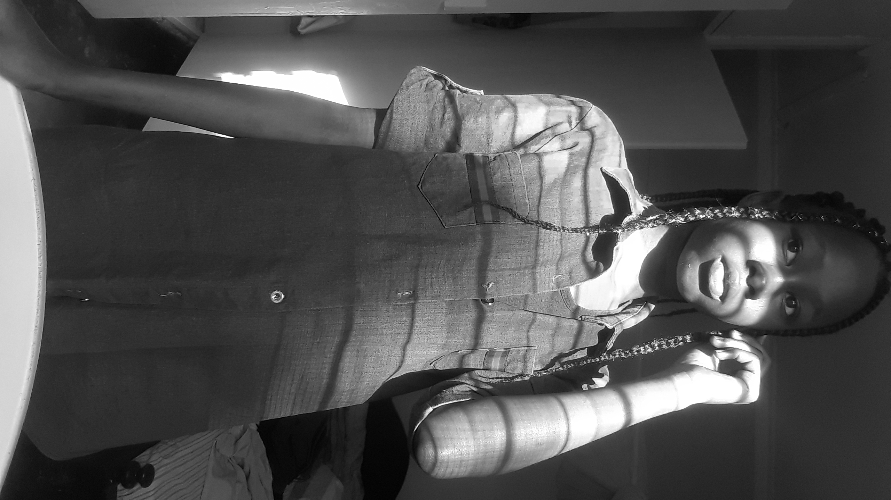

doctype!
KelC's lifeline
my name is Kelsey but am mostly called KelC, yes with the C that you saw😼.
i learn at BAPS
i live in Mumias and i have some few friends I'd like to mention
- Tamara
- Nelia
- Terrie
because they stay close to us. Yes that's right! we are neighbors.
.
what we do for fun
we normally do alot of things for fun actually
sleepovers, we normally lick ice, walk around the neighborhood together and much fun stuff.
but the craziest thing we've ever done was this
one day Terrie and i sneaked to school by making Resh jump over the fence
Resh is a friend of my sister. Yes she is nearly 10 years old
of course our plan failed. Sema kushikwa na soldier.
we thought we were done for
the security guard took us to the school headteacher, by the way it was during off school days, to our amazement the headteacher
laughed.
i wanted to laugh but you cannot trust Kenyan teachers a laugh might mean
"leta hio kiboko!"
that was all guys.

Send email